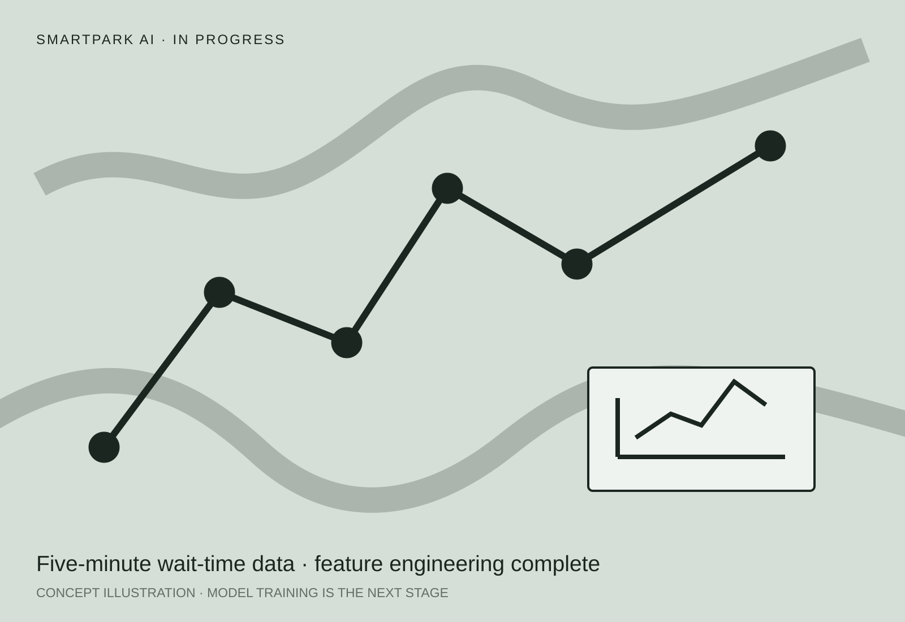

Machine learning / Data product
SmartPark AI
An in-progress machine-learning project for predicting theme-park wait times and planning routes, built on live data collected every five minutes.
- Role
- Data pipeline · Feature engineering
- Timeline
- Mar — Sep 2026
- Status
- Feature engineering complete
- Next
- Model training and evaluation
- Team
- Two people

01 / Problem
A good park route depends on what the queues will be—not only what they are now.
SmartPark AI is being built to predict ride wait times and create routes that account for both waiting and walking. Its pipeline collects live wait times across multiple parks at five-minute intervals and combines them with weather, holidays and opening hours.
The data pipeline and multi-park feature engineering are complete. Model training has not started yet.
02 / Model
A model pipeline designed for a time-dependent problem.
- Train one XGBoost regression model per attraction and evaluate it with time-series splits.
- Use the completed weather, calendar, opening-hour and recent wait-time features.
- Compare against naïve baselines and report live-correction and next-day prediction separately.
- Use SHAP to explain global patterns and individual predictions.
03 / Routing
Turn predictions into a useful plan.
The planned routing layer will combine predicted waits with walking graphs, then improve candidate routes using greedy search and 2-opt.
A separate coordination simulation will compare uncoordinated, coordination-aware and system-optimal routing. Its headline measure will be the price of anarchy: how much collective time is lost when every visitor independently follows the same locally optimal advice. The project is in progress for Bundeswettbewerb KI 2026.